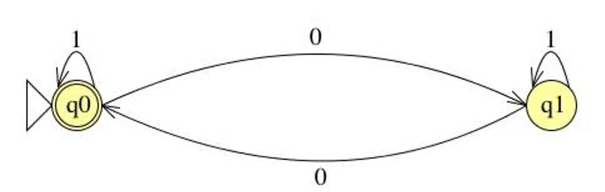
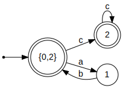
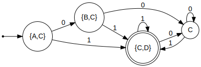
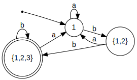

6 Finite Automata
6.1 Regular Expressions
What regular expressions are
What kinds of patterns they can express — and what they cannot
How to use them in programming to match and manipulate strings
How are regular expressions implemented?
Given an arbitrary RE and a string, how can we determine whether the RE matches the string?
What are the basic components of regular expressions, and how do they relate to one another? For instance, some operators can be expressed in terms of others, such as e+ being equivalent to ee*.
At a fundamental level, a regular expression represents a set of strings that match the pattern, and viewing them this way provides a crucial perspective. This viewpoint will guide our approach to designing and implementing effective regular expression matching.
6.2 Alphabet, String, and Language
First, let’s review some basic concepts.
Alphabet: An alphabet is a finite set of symbols, typically denoted by Σ (the Greek letter sigma). It defines the basic building blocks used to form strings in formal languages.
Binary: Σ = {0, 1}
Decimal: Σ = {0, 1, 2, 3, 4, 5, 6, 7, 8, 9}
Alphanumeric: Σ = {0–9, a–z, A–Z}
ε denotes the empty string (written as "" in OCaml).
|s| represents the length of string s.
Example: |Hello| = 5, |ε| = 0
Ø is the empty set (it has no elements). Ø ≠ {ε} and Ø ≠ ε — these are distinct concepts.
0101
0101110
ε
Language: A language L is a set of strings formed from symbols of a given alphabet Σ. In other words, once we define an alphabet, we can describe a language as any collection of finite strings built using those symbols.
Formally:
L ⊆ Σ*Here, Σ* (read “Sigma star”) represents the set of all possible strings, including the empty string ε, that can be constructed using symbols from Σ.
Example 1:
All strings of length 1 or 2 over the alphabet Σ = {a, b, c} that begin with a:
L1 = { a, aa, ab, ac }
Example 2:
All strings over Σ = {a, b}:
L2 = { ε, a, b, aa, bb, ab, ba, aaa, bba, aba, baa, … }
This is the language Σ* itself — that is, all possible strings (of any length) over the alphabet {a, b}.
Example 3:
A language can also represent a real-world set of strings. For instance, the set of valid phone numbers over the alphabet Σ = {0, 1, 2, 3, 4, 5, 6, 7, 8, 9, (, ), -}:
L3 = { "(301)405-1000", "(202)555-0182", "410-555-7890", … }
Are all strings over the alphabet Σ = {0, 1, 2, 3, 4, 5, 6, 7, 8, 9, (, ), -} included in the language L3? No. Not every string over this alphabet forms a valid phone number. For example, the string "(((((((—
— " uses only symbols from Σ but does not represent a valid phone number, so it is not in L₃. Is there a regular expression that describes L3? Yes. The language L3, representing valid phone numbers, can be expressed using the regular expression: \(\d{3}\)\d{3}-\d{4}. This pattern matches strings in the form (XXX)XXX-XXXX, where each X is a digit.
6.2.1 The Set of All Valid (Runnable) OCaml Programs
Consider the language of all valid OCaml programs — that is, every possible sequence of characters that forms a syntactically correct and executable OCaml program. Each valid program (for example, print_endline "Hello";;) can be viewed as a string over a suitable alphabet that includes letters, digits, punctuation, and symbols used in the OCaml language.
This collection of all syntactically correct programs forms a language in the formal sense — a set of strings over an alphabet that satisfy certain grammatical rules (in this case, the OCaml grammar).
Later in the course, we will learn how such programming language grammars can be formally specified using tools more expressive than regular expressions. While regular expressions are powerful for describing many kinds of string patterns (like tokens, identifiers, or numbers), they are not sufficient to describe the full syntax of programming languages such as OCaml. To handle nested structures (like parentheses, let-bindings, or function definitions), we need more powerful formalisms such as context-free grammars (CFGs).
6.3 Operations on Languages
Union (L₁ ∪ L₂): Strings that belong to either L₁ or L₂.
Concatenation (L₁ · L₂): All strings formed by taking a string from L₁ followed by a string from L₂.
Kleene Star (L*): All strings formed by concatenating zero or more strings from L.
Concatenation L1L2 creates a language defined as:
L1L2 = { xy | x ∊ L1 and y ∊ L2}
Union creates a language defined as
L1 ∪ L2 = { x | x ∊ L1 or x ∊ L2}
Kleene closure creates a language is defined as L* = { x | x = ε or x ∊ L or x ∊ LL or x ∊ LLL or …}
Here is an Example:
Let L1 = { a, b }, L2 = { 1, 2, 3 } (and Σ = {a,b,1,2,3})
L1L2: { a1, a2, a3, b1, b2, b3 }
L1 ∪ L2: { a, b, 1, 2, 3 }
L1* : { ε, a, b, aa, bb, ab, ba, aaa, aab, bba, bbb, aba, abb, baa, bab, … }
6.4 Regular Languages
In theoretical computer science and formal language theory, a regular language is a formal language that can be described using a regular expression (RE).
Regular expressions represent regular languages. They are not merely a convenient tool for describing string patterns — they have a precise mathematical meaning. Each regular expression corresponds to a specific regular language, which is the set of all strings that match the expression.
In short, regular expressions provide a formal notation for defining regular languages.
When we write a regular expression such as:
(a∣b)*ab
it denotes the language consisting of all strings over the Σ ={a,b} that end with “ab”.
While regular expressions and finite automata are powerful, not every language can be described by a regular expression. Some languages are simply too complex to be captured by the limited memory of a finite automaton.
Palindromes over Σ: The set of all strings that read the same forwards and backwards (e.g., abba, 0110). Recognizing palindromes requires remembering the first half of the string to compare with the second — something a finite automaton cannot do.
L = { aⁿbⁿ | n > 0 }: The set of strings with an equal number of a’s followed by b’s, such as ab, aabb, aaabbb, etc. This language is not regular because it requires counting — another task beyond the capability of finite automata.
Programming Languages: Most programming languages (like OCaml, Python, or C) are not regular, since their syntax involves nested structures and dependencies (e.g., matching parentheses, block scopes). However, some components of these languages are regular, such as identifiers, numbers, or simple tokens.
Despite these limits, regular expressions remain extremely useful, especially in lexical analysis — the first stage of program compilation where the source code is broken into tokens. Tools like lex, flex, and many modern regex libraries use regular expressions to describe and recognize these patterns.
6.5 Semantics of Regular Expressions
- Base cases:
ε — represents the language {ε}, which contains only the empty string.
∅ — represents the empty language, containing no strings.
For each symbol a ∈ Σ, a is a regular expression denoting the language {a}.
- Inductive (recursive) cases: If A and B are regular expressions representing the languages L(A) and L(B), then the following are also regular expressions:
Regular Expression
Denoted Language
A | B
Union: L(A) ∪ L(B)
A · B
Concatenation: L(A)L(B)
A*
Kleene star: L(A)*
Regular expressions apply operations to symbols to generate a set of strings, also known as a language. (A formal definition will follow.)
a generates the language {a}
a | b generates the language {a} ∪ {b} = {a, b}
a* generates the language {ε} ∪ {a} ∪ {aa} ∪ … = {ε, a, aa, …}
If a string s ∈ L, where L is the language generated by a regular expression r, we say that r accepts, describes, or recognizes the string s.
OCaml – concatenation of single-symbol REs
(OCaml|Rust) – union
(OCaml)* – Kleene closure
(OCaml)+ – same as (OCaml)(OCaml)*
(Ocaml)? – same as (ε|(OCaml))
[a-z] – same as (a|b|c|...|z)
[^0-9] – same as (a|b|c|...) for a,b,c,... ∈ Σ - {0..9}
^, $ – correspond to extra symbols in alphabet
Think of every string containing a distinct, hidden symbol at its start and at its end – these are written ^ and $
6.6 Implementing Regular Expressions
Regular expressions can be implemented by converting them into an equivalent finite automaton — a computational model that recognizes exactly the same set of strings described by the expression.
In essence, a finite automaton serves as a machine that reads an input string symbol by symbol and determines whether it belongs to the regular language defined by the regular expression.
Simply put, to determine whether an input string matches a pattern, we first build a small machine based on the pattern. Then, we feed the string into the machine — if the machine accepts it, the string matches; if it rejects it, the string does not match.
Thus, every regular expression corresponds to a finite automaton, and every finite automaton defines a regular language.
6.6.1 Finite State Machine
A Finite-State Machine (FSM) — also known as Finite-State Automaton (FSA), Finite Automata, or simply a State Machine — is a mathematical model of computation. It represents an abstract machine that can be in one and only one state at any given time.
In class, the terms FSM, FSA, and FA are all used to refer to a finite-state machine.
The machine can change from one state to another in response to certain inputs. Such a change is called a transition.
A finite set of states
A start (initial) state
A set of input symbols (alphabet)
A transition function that describes how states change in response to inputs
In summary, the FSM processes inputs one at a time, moving through states according to its transition rules. For example, consider the finite-state machine shown below:
States are represented by circles, and transitions are represented by arrows.
Set of states: {S0, S1}
Start state: S0. — The state where the automaton begins computation. It is indicated by an incoming arrow with no origin. There is only one start state.
Final (accepting) state: S1 — denoted by the double circles. There may be zero or multiple final states in general. Any state, including the start state, can be final
Input symbols: {0,1}
Transitions: {(S0, 0, S0), (S0, 1, S1), (S1, 1, S1), (S1, 0, S0)} - Each transition specifies how the automaton moves from one state to another when reading a particular input symbol.
The FSM’s next state depends only on its current state and the current input symbol, not on the sequence of inputs that led to the current state. In other words, the machine has no memory of past inputs beyond the current state it is in.
Now, let’s explain how a Finite Automaton processes an input string.
The machine begins in the start (initial) state.
- It processes the input string symbol by symbol until the end of the string is reached:
Read the next symbol σ ∈ Σ from the string.
Follow the transition edge labeled with σ to the next state.
After the entire string has been read, the string is accepted if the automaton is in a final (accepting) state; otherwise, it is rejected.
Starting at S0, the first input 0 keeps the machine in S0.
The next input 0 also keeps it in S0.
The next symbol 1 causes a transition from S0 to S1.
The following 0 moves the machine from S1 back to S0.
The next 1 transitions it to S1, and the final 1 keeps it in S1.
After processing all input symbols, the machine ends in S1, which is a final (accepting) state. Therefore, the input string “0 0 1 0 1 1” is accepted by the FSM.
After processing all the input symbols, the FSM ends in S0, which is a rejecting state.
Thus, the input string “0 0 1 0 1 0” is rejected by the FSM.
The state in which the machine ends after processing the input.
Whether the input is accepted or rejected by the FSM.
Input String | State at end | Accepts? |
aabcc | S2 | Yes |
acca | S3 | No |
aacbbb | S3 | No |
ε | S0 | Yes |
From the FSM above, notice that state S3 has no outgoing transitions. This means that once the machine enters S3, it cannot leave. Such a state is called a dead state.
In some cases, we simplify an FSM by omitting dead states. If a transition is not explicitly defined, it is assumed to lead to a dead state.
Based on the examples, what do you think is the language recognized by the FSM above?
The FSM accepts all strings that can be generated by the regular expression a*b*c*.
6.7 FSM Exercises
Define an FSM over Σ = {0,1} that accepts strings with an odd number of 1s.
Define an FSM over Σ = {a,b} that accepts strings containing an even number of a’s and any number of b’s

Define an FSM over Σ = {0,1} that accepts strings containing two consecutive 0s followed by two consecutive 1s.
Define an FSM over Σ = {0,1} that accepts strings END with two consecutive 0s followed by two consecutive 1s.
Define an FSM over Σ = {0,1} that accepts strings containing an odd number of 0s and odd number of 1s.
6.8 DFA and NFA
- Deterministic Finite Automaton (DFA)
A DFA is a finite-state machine in which each state and input symbol pair has exactly one next state.
It reads input symbols one at a time and moves deterministically from one state to the next.
An input string is accepted if the machine ends in a final state after processing all input symbols.
Example:
- Formally, A deterministic finite automaton (DFA) is a 5-tuple (Σ, Q, q0, F, δ) where
Σ is an alphabet
Q is a nonempty set of states
q0 ∊ Q is the start state
F ⊆ Q is the set of final states
δ : Q x Σ → Q specifies the DFA’s transitions
A DFA accepts s if it stops at a final state on s.For
We have
Σ = {0, 1} Q = {S0, S1} q0 = S0 F = {S1} δ = {(S0,0,S0), (S0,1,S1),(S1,0,S0), (S1,1,S1) }We can also represent the transitions as a table, called transition table:
States
0
1
S0
S0
S1
S1
S0
S1
- Nondeterministic Finite Automaton (NFA)
An NFA is a finite-state machine in which a state and input symbol pair can lead to zero, one, or multiple next states.
NFAs may include epsilon (ε) transitions, allowing the machine to move to another state without consuming any input.
It reads input symbols one at a time and can branch into multiple possible paths simultaneously.
An input string is accepted if any path leads to a final state.
Example:

Each transition is a triple (current state, input symbol or ε, next state)
For a given state and input (or ε), the NFA may move to one or more possible next states.
Since δ is a subset, it allows multiple transitions for the same (state, input) pair, or even no transitions at all.
6.9 Reducing Regular Expressions to NFAs
Given a regular expression A, our goal is to construct an equivalent NFA, denoted as ⟨A⟩ = (Σ, Q, q₀, F, δ).
Regular expressions are defined recursively from primitive RE languages. Each component of a regular expression corresponds to a small NFA fragment, and these fragments are combined according to the operators used in the expression.
Throughout the construction, we maintain the invariant |F| = 1, meaning that each NFA we build will have exactly one final state.
We will define <A> for base cases: σ , ε , ∅ where σ is a symbol in Σ and and for inductive cases: AB, A|B, A*
Recall: NFA is (Σ, Q, q0, F, δ)
where
Σ is the alphabet
Q is set of states
q0 is starting state
F is set of final states
δ is transition relationFor a single symbol σ, we construct an NFA with two states: the start state and the final state. The start state transitions to the final state on input σ.
<σ> = ({σ}, {S0, S1}, S0, {S1}, {(S0, σ, S1)} )
( Σ, Q, q0, F, δ )
Base case: ε
To recognize ε, the empty string, we create an NFA with a single state that serves as both the start and the final state.
<ε> = (∅, {S0}, S0, {S0}, ∅)Base case: ∅ To represent the empty set (∅), we construct an NFA with two states: a start state and a final state. There are no transitions between them, so the final state is unreachable from the start state. This automaton accepts no strings.
<∅> = (∅, {S0, S1}, S0, {S1}, ∅)Now, let us look at the inductive cases.
Concatenation
Given a machine A and B, we want to build a concatenation AB.
<A> = (ΣA, QA, qA, {fA}, δA)
<B> = (ΣB, QB, qB, {fB}, δB)We construct the new NFA by adding an ε-transition from the final state of A to the start state of B. The start state of the combined NFA is the start state of A, and the final state is the final state of B.
<A> = (ΣA, QA, qA, {fA}, δA)
<B> = (ΣB, QB, qB, {fB}, δB)
<AB> = (ΣA ∪ ΣB, QA ∪ QB, qA, {fB}, δA ∪ δB ∪ {(fA,ε,qB)} )Union
Given a machine A and B, we want to build a union A|B.
<A> = (ΣA, QA, qA, {fA}, δA)
<B> = (ΣB, QB, qB, {fB}, δB)
<A|B> = (ΣA ∪ ΣB, QA ∪ QB ∪ {S0,S1}, S0, {S1},
δA ∪ δB ∪ {(S0,ε,qA), (S0,ε,qB), (fA,ε,S1), (fB,ε,S1)})Closure (Kleene Star)
Given a machine A and B, we want to build A*.
<A> = (ΣA, QA, qA, {fA}, δA)a new start state S0
a new final state S1
ε-transitions from S0 to the starts state of A
ε-transition from the final state of A the new final state S1
ε-transition from S0 to S1
ε-transition from S1 to S0
<A*> = (ΣA, QA ∪ {S0,S1}, S0, {S1},
δA ∪ {(fA,ε,S1), (S0,ε,qA), (S0,ε,S1), (S1,ε,S0)})RE to NFA Example
RE: ab*|cd

6.10 Subset Construction (NFA to DFA Conversion)
ε-closure(δ, p) (and ε-closure(δ, Q))
move(δ, p, σ) (and move(δ, Q, σ))
where p is an NFA state.
6.10.1 Subset Construction Algorithm
Let r0 = e-closure(δ, q0)
add r0 to R
While ∃ an unmarked state r ∈ R:
Mark r
For each σ ∈ Σ
Let m = move(delta, r, σ)
Let e = e-closure(δ, m)
If e ∉ R
Let R = R ∪ {e}
Let δ' = δ'∪ { r, σ, e }
Let F = { r ∣ ∃ s ∈ r with s ∈ F n }6.10.2 Example 1
NFA:

States | a | b | c |
{0,2} | 1 | Ø | 2 |
1 | Ø | {0,2} | Ø |
2 | Ø | Ø | 2 |
DFA:

6.10.3 Example 2
NFA:
States | a | b |
{1,3} | Ø | {2,4} |
{2,4} | {2,3} | Ø |
{2,3} | {2,3} | 4 |
4 | Ø | Ø |

6.10.4 Example 3

States | a |
{1,2,4} | {1,2,3,4} |
{1,2,3,4} | {1,2,3,4} |
DFA:

6.10.5 Example 4

States | 0 | 1 |
{A,C} | {B,C} | {C,D} |
{B,C} | C | {C,D} |
C | C | {C,D} |
{C,D} | C | {C,D} |

6.10.6 Example 5
NFA:

States | a | b |
0 | {0,1} | Ø |
{0,1} | {0,1} | {2,3} |
{2,3} | {0,1} | {2,3,4} |
{2,3,4} | {0,1} | {2,3,4} |
DFA:

6.10.7 Example 6
Language: (a|b)*bb
NFA:

States | a | b |
1 | 1 | {1,2} |
{1,2} | 1 | {1,2,3} |
{1,2,3} | 1 | {1,2,3} |
DFA:
